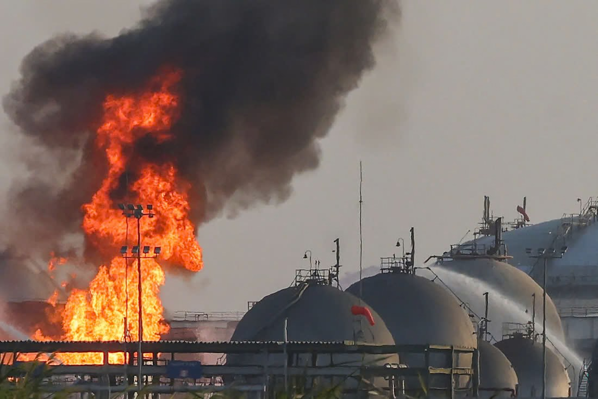

Imagen: AFP/SCANPIX
“Cinco drones de los hutíes golpean dos plantas de Aramco (la petrolera saudí)”, “Arabia Saudita y Washington acusan a Irán de estar detrás de los ataques contra sus instalaciones petroleras”, “Irán niega haber atacado las instalaciones petroleras saudíes y dice estar listo para la guerra”. Todas estas son notas de septiembre…pero de 2019. Siete años después, el conflicto entre Arabia Saudita y los hutíes, un grupo rebelde de Yemen apoyado por Teherán, reemerge entretejido con el conflicto entre Irán, Estados Unidos e Israel, salvo que ahora las afectaciones al suministro global de petróleo son mucho más serias. En el curso de estos años, además, los hutíes aprendieron mucho acerca de su poder.
Hace una semana iniciamos este espacio comentando la importancia del control de posiciones geoestratégicas, cadenas de suministro y recursos en una economía hiperglobalizada como la actual. Este es un caso que lo ilustra. En el curso de estos años, los hutíes y otros aliados de Irán no solo han afinado sus tácticas para combatir contra ejércitos mucho más poderosos que ellos, sino también han dimensionado su capacidad para impactar la economía global y hoy entienden mejor el poder político que esto les permite ejercer. Así que el conflicto de Yemen se entreteje sin duda con el conflicto de Washington e Israel con Irán. Pero, sobre todo, este tema está lejos de ser puramente regional: sus efectos se resienten en olas expansivas en todo el planeta. Unos apuntes al respecto:
1. Los hutíes son un grupo insurgente de Yemen, cuyos integrantes predominantemente pertenecen a una subsecta del islam chiíta, llamada zaidi. Los hutíes participaron en las revueltas de la Primavera Árabe en 2011. Se trata de una agrupación apoyada por Irán desde los años noventa, aunque el respaldo iraní en ese entonces era mucho menor que en la actualidad.
2. Los rebeldes hutíes tomaron en 2014 el control de la capital del país, Saná, y lanzaron una gran ofensiva de expansión, amenazando a Adén, ciudad a la que tuvo que huir el gobierno formalmente reconocido, liderado por el presidente Hadi.
3. Entonces, ya en 2015, Arabia Saudita decidió iniciar ataques aéreos contra los hutíes y formó una coalición internacional compuesta por potencias sunitas de toda la región. Esta coalición pretendía frenar el avance hutí, y con ello la injerencia de Irán en la zona, y restablecer el gobierno de Hadi, a quien respaldaban.
4. La cuestión es que, después de siete años de combate y de haberse convencido de que los hutíes no iban a ser derrotados mediante una campaña de bombardeos masivos—los cuales, por cierto, solo habían elevado el costo humano de la guerra—Riad prefirió negociar un cese al fuego en Yemen que estuvo en vigor desde 2022 hasta ahora.
5. Ya en 2023, los hutíes decidieron respaldar a Hamás, también aliado de Irán, en su guerra contra Israel. Además de lanzar misiles y drones contra ese país durante estos años, y comprendiendo las ventajas de su posición geográfica en las puertas del Mar Rojo, los hutíes atacaron primero embarcaciones vinculadas al comercio con Israel y, posteriormente, aquellas vinculadas a Washington o sus aliados.
6. Esto último les mostró lo mucho que podían hacer al provocar disrupciones en una de las vías geográficas críticas del comercio entre Asia, África y Europa. Desde Biden hasta Trump, Estados Unidos y varios de sus aliados, como Reino Unido, decidieron combatirles para garantizar la seguridad de la navegación comercial. Los hutíes terminaron peleando contra todos y, al final, Trump tuvo que negociar con ellos.
7. Es por ello que, desde el inicio de la guerra de Washington e Israel contra Irán, el régimen en Teherán, además de cerrar el Estrecho de Ormuz, por donde circulaba un 20% del petróleo y del gas que se consume en el globo, estuvo amenazando con cerrar aquel otro estrecho en donde los hutíes tienen la llave del Mar Rojo, involucrando así a esos aliados para defenderse de sus agresores.
8. Acá necesitamos hacer una pausa. De todo el eje de alianzas de Teherán, los hutíes son probablemente el actor más autónomo y con mayores aspiraciones propias. Si bien esa organización se ha servido enormemente de su pertenencia al eje proiraní—no solo mediante el suministro de armas, sino también a través del entrenamiento y apoyo logístico—también es verdad que, a medida que han transcurrido los años, los hutíes se han venido independizando cada vez más de Teherán.
En el mundo árabe y el mundo islámico en general, los hutíes se presentan como el rival que ha sido capaz de desafiar a Israel, a Estados Unidos y a sus aliados juntos, en favor de causas como la palestina u otras asociadas a la lucha que ellos presentan como anticolonial. Esto, junto con todo el poder que les aporta su geografía, les convierte en una agrupación muy difícil de reducir, pero también en un aliado no incondicional de Teherán.
9. Esto último explica por qué los hutíes inicialmente no salieron de inmediato a la defensa de Teherán cuando fue atacada por Israel y EE. UU., como sí lo hizo Hezbollah desde Líbano, por ejemplo. Pasadas algunas semanas, los hutíes anunciaron que sí se sumarían, pero únicamente lanzaron unos cuantos misiles contra Israel.
10. Sin embargo, el pasado 13 de julio, fuerzas del gobierno yemení internacionalmente reconocido, respaldadas por Arabia Saudita, bombardearon la pista del aeropuerto de la capital de Yemen para impedir el aterrizaje de un avión iraní de pasajeros. Posteriormente, Reuters informó que el vuelo habría transportado también a miembros de las Guardias Revolucionarias iraníes, asesores y componentes de misiles y drones destinados a los hutíes. Axios reportó que Trump había autorizado a Riad a llevar a cabo ese bombardeo para prevenir que los hutíes pudieran recibir el armamento.
11. Los hutíes respondieron de manera inmediata. Desde entonces, no solo se reinició la guerra civil en Yemen, sino que se reactivó el conflicto entre los hutíes y Arabia Saudita, con todos los ataques a infraestructura civil y energética saudí, y contra el tránsito de petróleo saudí, lo que además de los hutíes ya involucra a otros actores del eje proiraní.
12. Hay que entender que, con el bloqueo del Estrecho de Ormuz por Irán, Arabia Saudita estaba empleando el Mar Rojo como ruta alternativa para exportar su petróleo. Hace pocos días, milicias aliadas de Irán lanzaron desde Irak misiles que tienen por ahora inhabilitado el oleoducto saudí que desemboca a ese mar. Esto se suma a los ataques hutíes contra barcos petroleros saudíes que transitan por esa vía.
13. Dos factores adicionales: (a) Riad ha pedido la ayuda de Trump para combatir a los hutíes, pero EE. UU. se está negando. No es de sorprender. No solo Washington ya protagonizó varias rondas contra los hutíes sin poderlos doblegar, sino que ahora mismo el arsenal y la capacidad de combate de EE. UU. se encuentran limitados, y lo que Trump está buscando es salirse del conflicto, no acciones que le involucren aún más, y (b) Arabia Saudita también tiene su arsenal de misiles interceptores muy reducido y los hutíes lo saben muy bien.
14. Como resultado de lo anterior, podemos afirmar primero, que gracias a la reactivación de la guerra interna en Yemen los hutíes han ganado nuevas posiciones estratégicas críticas para controlar aún más la circulación desde y hacia el Mar Rojo, por donde pasa 15% del comercio global; y segundo, que estamos volviendo a ver a Arabia Saudita involucrada en un tipo de conflicto que no le funcionó durante siete años. Sus bombardeos, por supuesto, dañan a los hutíes, pero también golpean a la población yemení y generan represalias hutíes que impactan sobre sus exportaciones petroleras, lo cual se suma a la disrupción que ya existía por el bloqueo de Ormuz.
Por tanto, y contra lo que Trump hubiese querido, la posición negociadora de Irán es hoy, gracias a la reactivación de este otro conflicto, incluso más fuerte a lo que ya era hace un par de meses.
CIPMEX · Centro de Investigación para la Paz México, A.C. · Paz que se piensa, paz que se construye